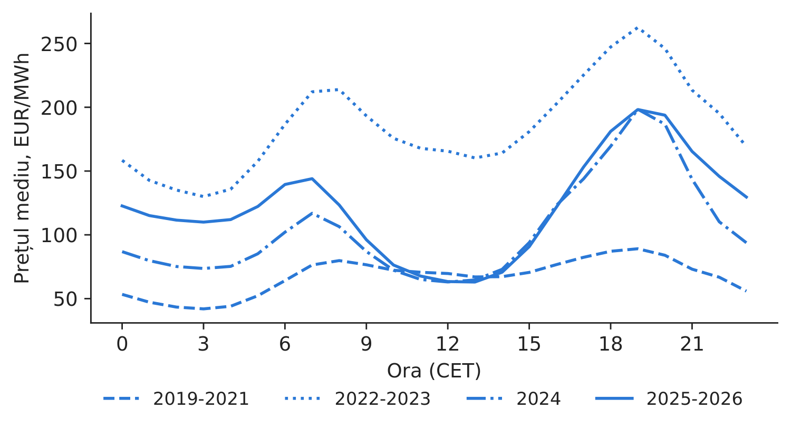
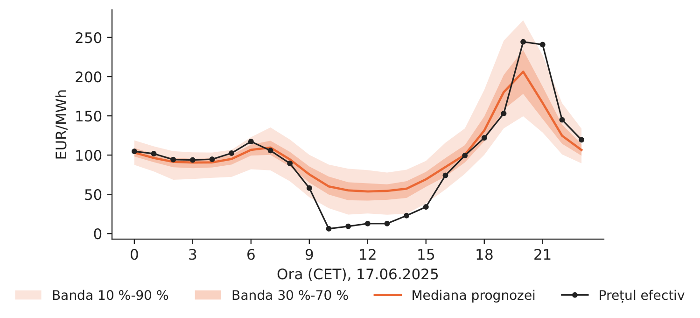
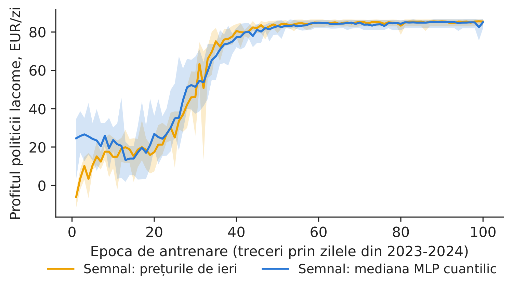
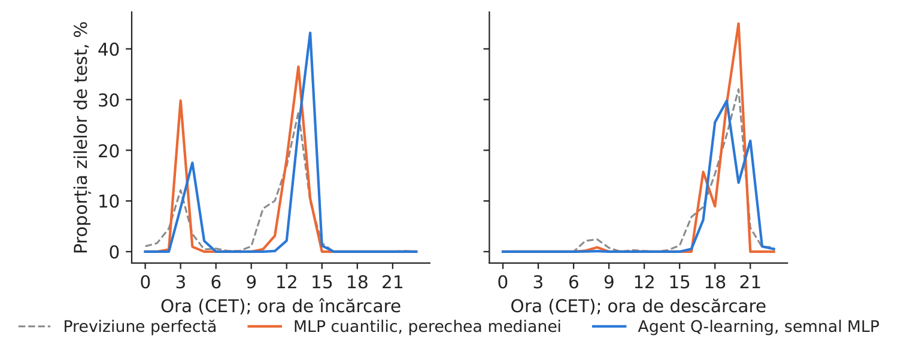
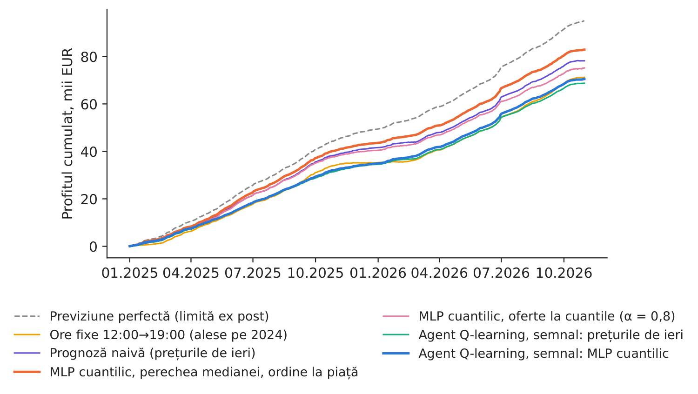

Studiul de caz 4 · Cursul 10
O baterie pe piața pentru ziua următoare — rețele neuronale cuantilice și învățare prin recompensă
Prof. dr. Daniel Traian PELE
Academia de Studii Economice din București, Departamentul de Statistică și Econometrie
Academia Română, Institutul de Prognoză Economică
Lucrarea de referință
Andrei, A.-V., Cepoi, C. O., Dumitrescu, B. A., Lessmann, S., Chiriac (Luchian), A.-C., Pele, D. T. și Petukhina, A. (2026). Joint probabilistic forecasting for battery arbitrage in day-ahead power markets. SSRN (Social Science Research Network), document de lucru 6872381. doi:10.2139/ssrn.6872381
Problema decizională
Un trader de energie din București operează un sistem de stocare a energiei în baterii (BESS, battery energy storage system) de 1 MW / 1 MWh. În fiecare zi, înainte de prînz, trebuie să depună ofertele pentru ziua următoare, fără să cunoască prețurile de a doua zi. Două echipe propun cîte un instrument. Echipa de știința datelor propune o rețea neuronală care prognozează întreaga distribuție a celor 24 de prețuri din ziua următoare, urmată de o regulă simplă care alege orele. Echipa de analiză cantitativă propune un agent cu învățare prin recompensă care învață singur cînd să încarce și cînd să descarce bateria. Consiliul de administrație pune două întrebări: care instrument cîștigă mai mult pe date noi și cîștigă vreunul suficient pentru a recupera investiția în baterie?
Lucrarea de referință
Întrebarea de cercetare. Ce parte din valoarea de arbitraj poate capta o baterie ex ante, atunci cînd este operată pe baza prognozelor probabilistice ale prețului, și justifică această valoare investiția, pe patru piețe interconectate pentru ziua următoare din Europa Centrală și de Est (secțiunile 1 și 3)?
Datele. Prețurile orare pentru ziua următoare din România, Bulgaria, Ungaria și Cehia, ianuarie 2018 – septembrie 2024 (59.160 de ore pentru fiecare țară), cu 37 de variabile explicative: consumul, producția și prognozele acestora, prețurile anterioare, prețul petrolului Brent, prețul gazelor naturale TTF (Title Transfer Facility) și prețul certificatelor de emisii de CO\(_2\), variabile meteorologice și calendaristice (secțiunea 5.1). Bateria: 1 MW / 1 MWh, randament de 90 %, CAPEX (cheltuieli de capital) de 500.000 EUR, durată de viață de 15 ani, rată de actualizare de 7 %, cel mult un ciclu pe zi (secțiunea 4).
Metoda. Modelele DRF (Distributional Random Forests, păduri aleatoare care estimează distribuții întregi) prognozează distribuția comună a celor 96 de prețuri din ziua următoare (24 de ore \(\times\) 4 țări) și sînt reestimate la fiecare 30 de zile pe ultimele 365 de zile. O regulă bazată pe cuantile (QB) alege ora de cumpărare și ora de vînzare pe baza medianelor prognozate și plasează oferte cu preț limită la cuantilele prognozei; reperele sînt o pereche fixă de ore (NH) și previziunea perfectă zilnică (PF-Daily); investiția este evaluată prin valoarea actualizată netă (VAN), perioada de recuperare și CAPEX-ul de echilibru.
Principalele rezultate ale lucrării.
- Pentru \(\alpha=0{,}8\), strategia QB obține un profit cumulat mai mare decît NH pe toate cele patru piețe, cu cîștiguri relative de aproximativ 13 % în Cehia și 7 % în România (secțiunea 6.2). România, ianuarie 2019 – septembrie 2024: QB 142.671 EUR, NH 133.230 EUR, PF-Daily 188.249 EUR; perioada de recuperare a investiției este de 20,1 ani pentru QB (tabelul pentru România).
- La CAPEX-ul de referință de 500.000 EUR, nicio strategie nu acoperă costul investiției; pentru regula QB, CAPEX-ul de echilibru se situează între 48 % și 75 % din valoarea de referință (secțiunea 6.2).
- Operarea comună, transfrontalieră, crește profitul QB în România cu aproximativ 5 % (149,9 față de 142,7 mii EUR), datorită diferențelor regionale persistente de preț (rezumat; tabelul pentru operarea în mai multe zone). Acuratețea DRF pentru România: eroarea absolută medie (MAE, mean absolute error) 39,63, rădăcina erorii pătratice medii (RMSE, root mean squared error) 49,60 și scorul probabilistic ordonat continuu (CRPS, continuous ranked probability score) 28,12 EUR/MWh, pe 70 de ferestre mobile (tabelul privind performanța prognozelor DRF).
Aceeași lucrare stă la baza studiului de caz 6 din cursul Analiza cantitativă a piețelor de energie (cu păduri aleatoare); aici înlocuim pădurea aleatoare cu o rețea neuronală și adăugăm un agent cu învățare prin recompensă. Studiu de caz înrudit din acest curs: avertizarea timpurie explicabilă pentru vîrfurile de preț (studiul de caz 2).
Metoda, pas cu pas
Intuiția metodei
O baterie cîștigă diferența dintre prețul unei ore ieftine și cel al unei ore scumpe, minus energia pierdută la încărcare și descărcare. Retrospectiv, cele mai bune două ore sînt evidente; în momentul deciziei, ele sînt o prognoză. Există două moduri de a decide: întîi prognoza, apoi optimizarea (o rețea prognozează distribuția prețurilor de mîine, iar o regulă alege orele) sau învățarea directă a politicii (un agent încearcă încărcarea și descărcarea pe zilele trecute și păstrează ceea ce a adus profit).
Profitul unui ciclu. Fie \(p_{d,h}\) prețul orei \(h\) din ziua \(d\) și \(\eta=0{,}9\) randamentul fiecărei operații. Cumpărarea în ora \(h_1\) și vînzarea în ora \(h_2>h_1\) aduc \(\pi_d(h_1,h_2)=\eta\,p_{d,h_2}-p_{d,h_1}/\eta\). Previziunea perfectă alege în fiecare zi \(\max_{h_1<h_2}\pi_d\) (o limită superioară, stabilită ex post); strategia cu ore fixe folosește perechea cu cel mai mare profit total din anul anterior.
Rețeaua cuantilică. Un perceptron multistrat (MLP, multilayer perceptron) transformă informația cunoscută la închiderea porții, \(\mathbf x_d\) (cele 24 de prețuri din zilele \(d-1\) și \(d-7\), prețurile medii din Bulgaria și Ungaria în ziua \(d-1\), ziua săptămînii, sezonul), prin două straturi ascunse \(\mathbf h^{(l)}=\mathrm{ReLU}(\mathbf W^{(l)}\mathbf h^{(l-1)}+\mathbf b^{(l)})\) cu cîte 128 de neuroni, în \(24\times9\) ieșiri \(\hat q_{\tau,d,h}\), \(\tau\in\{0{,}1,\dots,0{,}9\}\). Rețeaua este antrenată cu funcția de pierdere pinball (cuantilică) \(\mathcal L=\frac{1}{24\cdot 9\,n}\sum_{d,h,\tau}\rho_\tau(p_{d,h}-\hat q_{\tau,d,h})\), \(\rho_\tau(u)=\max\{\tau u,(\tau-1)u\}\), al cărei minim se atinge în cuantila condiționată de ordin \(\tau\); optimizatorul Adam, penalizare a ponderilor \(10^{-4}\), dropout 0,1, oprire timpurie pe o fereastră de validare ulterioară; cuantilele sînt apoi ordonate, ca să nu se intersecteze. Calitatea prognozei: \(\mathrm{CRPS}\approx\frac{2}{9}\sum_\tau\rho_\tau(p-\hat q_\tau)\), în EUR/MWh (valorile mici sînt preferabile), și acoperirea intervalului 10 %–90 % (nivelul-țintă este 80 %). Regulile. Perechea medianei: se aleg \((h_1,h_2)\) care maximizează \(\eta\hat q_{0.5,h_2}-\hat q_{0.5,h_1}/\eta\) și se tranzacționează numai dacă valoarea este pozitivă, cu ordine la prețul pieței. Ofertele la cuantile (ideea regulii QB din lucrare): cumpărare la \(\hat q_{1-q,h_1}\) și vînzare la \(\hat q_{q,h_2}\), cu \(q=(1-\alpha)/2\) și \(\alpha=0{,}8\).
Agentul Q-learning. O zi este un episod de 24 de pași. Starea este \(s_h=(\mathit{soc}_h,\,b_h,\,b^{\max}_{>h},\,b^{\min}_{>h})\): starea de încărcare (goală/plină), octila orei \(h\) în ordinea prognozată a zilei și cea mai mare, respectiv cea mai mică octilă din orele rămase. Acțiunile: așteptare, încărcare, descărcare; recompensa \(r_h\) este fluxul de numerar al orei. Valorile acțiunilor se actualizează prin \(Q(s_h,a_h)\leftarrow Q(s_h,a_h)+\lambda_n\big[r_h+\max_{a'}Q(s_{h+1},a')-Q(s_h,a_h)\big]\) (factor de actualizare 1 în cadrul zilei, pas \(\lambda_n=n^{-0{,}6}\) după \(n\) vizite), cu explorare \(\varepsilon\)-lacomă, de la 1 pînă la 0,05; politica este apoi \(\arg\max_aQ(s,a)\). Investiția. \(\bar\pi_{\mathrm{an}}=365\,\bar\pi_d\); \(\mathrm{VAN}=-\mathrm{CAPEX}+\bar\pi_{\mathrm{an}}\sum_{t=1}^{15}1{,}07^{-t}\); perioada de recuperare \(=\mathrm{CAPEX}/\bar\pi_{\mathrm{an}}\); pentru VAN \(=0\) este nevoie de \(\bar\pi_{\mathrm{an}}=54.897\) EUR.
În practică
Evaluați un instrument de tranzacționare după profitul dintr-o perioadă de test ulterioară, pe mai multe seeds, alături de orele fixe și de previziunea perfectă; evaluați bateria după profitul realist, comparat cu cei 54.897 EUR pe an necesari pentru recuperarea investiției.
Replicare pe datele cursului
Notebook-ul C4_notebook_RO.ipynb folosește prețurile orare pentru ziua următoare din România, Bulgaria și Ungaria (energy-charts.info), zilele de livrare în ora Europei Centrale (CET, Central European Time) cu 24 de prețuri.
Prognoza finală este antrenată pe ianuarie 2019 – august 2024 (2.037 de zile), cu validare pe septembrie–decembrie 2024; agentul învață pe 2023–2024 (719 de zile) din prognozele, făcute pe date noi, ale unei rețele antrenate pe 2019–2022; perioada de test este ianuarie 2025 – octombrie 2026 (658 de zile), după eșantionul lucrării. Fiecare rețea și fiecare agent sînt estimați cu cinci seeds.
Față de lucrare, implementarea de la curs folosește o rețea neuronală în locul DRF, numai prețurile anterioare și variabilele calendaristice ca variabile explicative, numai România și un singur ciclu pe zi.
Verificare pe perioada din lucrare (8 ianuarie 2019 – 30 septembrie 2024), unde nu este nevoie de prognoză: profitul nostru în ipoteza previziunii perfecte este de 187.456 EUR (lucrarea: 188.249), iar orele fixe 03:00\(\rightarrow\)19:00 CET aduc 128.711 EUR (lucrarea: 133.230).

Figura 1. Profilul orar mediu al prețului în România, în patru perioade.
Sursa: energy-charts.info; 2019–2026.

Figura 2. Prognoza MLP cuantilic pentru o zi de test (media celor cinci seeds).
Sursa: rețeaua noastră; energy-charts.info.
Calitatea prognozei în perioada de test. MLP-ul cuantilic are MAE 23,92 EUR/MWh (abaterea standard între seeds este 0,35), CRPS 19,11 EUR/MWh, iar intervalul 10 %–90 % cuprinde prețul efectiv în 75,0 % din ore (nivelul-țintă este 80 %); prognoza naivă „aceeași oră din ziua precedentă” are MAE 27,43. Valorile DRF din lucrare (MAE 39,63, CRPS 28,12) se referă la 2019–2024, perioadă care include criza din 2022, astfel că nivelurile nu sînt direct comparabile.
Tabelul 1. Strategiile de operare a bateriei în România, 1 MW / 1 MWh, perioada de test ianuarie 2025 – octombrie 2026; rețele și agenți: media celor cinci seeds (AS = abaterea standard a profitului între seeds).
| Strategia (1 MW / 1 MWh, România) | Profit, EUR | AS între seeds | EUR/an | VAN, EUR | Recuperare, ani |
|---|---|---|---|---|---|
| Previziune perfectă (limită ex post) | 95.053 | – | 52.727 | \(-\)19.766 | 9,5 |
| Ore fixe 12:00\(\rightarrow\)19:00 (alese pe 2024) | 71.205 | – | 39.498 | \(-\)140.253 | 12,7 |
| Prognoză naivă (prețurile de ieri) | 78.176 | – | 43.365 | \(-\)105.035 | 11,5 |
| MLP cuantilic, perechea medianei, ordine la piață | 82.878 | 1.038 | 45.973 | \(-\)81.278 | 10,9 |
| MLP cuantilic, oferte la cuantile (\(\alpha\) = 0,8) | 75.169 | 1.450 | 41.697 | \(-\)120.225 | 12,0 |
| Agent Q-learning, semnal: prețurile de ieri | 68.755 | 140 | 38.139 | \(-\)152.633 | 13,1 |
| Agent Q-learning, semnal: MLP cuantilic | 70.488 | 1.679 | 39.100 | \(-\)143.878 | 12,8 |
Sursa: calcule proprii; CAPEX 500.000 EUR, 15 ani, 7 % (ipotezele lucrării).

Figura 3. Profitul cumulat în perioada de test, pe strategii.
Sursa: calcule proprii; energy-charts.info, 2025–2026.

Figura 4. Curba de învățare a agenților Q-learning (banda: intervalul celor cinci seeds).
Sursa: calcule proprii; zilele de antrenare 2023–2024.
Ce arată datele. Profilul zilnic s-a schimbat: perechea fixă aleasă pe 2024 este 12:00\(\rightarrow\)19:00 CET (energia de la prînz este ieftină datorită producției solare), în timp ce pe perioada din lucrare era 03:00\(\rightarrow\)19:00. În perioada de test, previziunea perfectă aduce 95.053 EUR; orele fixe aduc 71.205 EUR, iar prognoza naivă 78.176. MLP-ul cuantilic cu perechea medianei cîștigă 82.878 EUR (abaterea standard între seeds este 1.038), adică 87,2 % din profitul previziunii perfecte; cu ofertele la cuantile din lucrare cîștigă 75.169 EUR (ambele oferte sînt acceptate în 71,0 % din zile). Agentul Q-learning învață o politică rezonabilă (Figura 5), și cîștigă 70.488 EUR cu semnalul MLP (AS 1.679) și 68.755 EUR cu prețurile de ieri (AS 140), aproximativ cît orele fixe: aici cîștigă abordarea „întîi prognoza, apoi optimizarea”, deoarece regula vede întreaga curbă prognozată, iar agentul o vede doar prin cîteva ranguri, și pentru că agentul a învățat pe 2023–2024, cu un alt profil zilnic.

Figura 5. Cînd încarcă și cînd descarcă fiecare strategie? Proporția zilelor de test pe ore (agenți și rețele: cele cinci seeds cumulate).
Sursa: calcule proprii; ianuarie 2025 – octombrie 2026.
Cifra relevantă pentru decizie. Cel mai bun instrument realist, MLP-ul cuantilic cu perechea medianei, cîștigă 45.973 EUR pe an, față de cei 54.897 EUR necesari: VAN \(-\)81.278 EUR, perioadă de recuperare de 10,9 ani, CAPEX de echilibru 418.722 EUR. Chiar și previziunea perfectă (52.727 EUR pe an, VAN \(-\)19.766 EUR) rămîne sub prag: ca în lucrare, arbitrajul singur nu recuperează o baterie de 500.000 EUR; este nevoie de un CAPEX mai mic sau de alte surse de venit.
Întrebări pentru discuție
- Echipa de analiză cantitativă susține că agentul se va îmbunătăți cu mai multe date. Ce dovezi (perioadă de test, seeds, repere) ați cere înainte de a-i încredința bateria?
- Perechea fixă s-a mutat de la noapte\(\rightarrow\)seară la prînz\(\rightarrow\)seară. Cît de des ați reantrena rețeaua și agentul și cine decide acest lucru?
- De ce pot aduce ofertele la cuantile mai puțin decît ordinele la prețul pieței cînd prognoza este bună, deși lucrarea le găsește mai avantajoase? Ce vă spune rata de acceptare?
- Ce alte venituri (din piața de echilibrare, din rezervele de reglaj al frecvenței, din plățile pentru capacitate, dintr-un al doilea ciclu zilnic) ați adăuga pentru a atinge 54.897 EUR pe an și cît de sigure sînt acestea?
- Cînd își merită învățarea prin recompensă complexitatea în cazul stocării: pentru o baterie și o piață sau pentru mai multe active, mai multe piețe și costuri de degradare?
Limitele replicării
(i) Un singur ciclu pe zi și o capacitate de 1 MWh; proiectele reale folosesc baterii cu durata de descărcare de 2–4 ore și mai multe surse de venit. (ii) Numai România, fără operare transfrontalieră, tarife, piață intrazilnică sau de echilibrare și fără efectul ofertelor asupra prețului. (iii) Rețeaua folosește numai prețurile anterioare și variabilele calendaristice (modelul DRF din lucrare folosește 37 de variabile explicative) și prognozează cele 24 de distribuții marginale, nu distribuția lor comună. (iv) Starea agentului rezumă prognoza prin ranguri, iar agentul este antrenat o singură dată, pe 2023–2024; previziunea perfectă este o limită stabilită ex post. (v) Nu includem costul degradării bateriei și nici tarifele de rețea.
Studiul de caz 4 pe scurt
- ÎntrebarePrognoză și optimizare sau un agent care învață: care cîștigă mai mult cu o baterie de 1 MW / 1 MWh și se recuperează investiția?
- DatePrețuri orare pentru ziua următoare din România, Bulgaria și Ungaria, 2019–octombrie 2026; test 2025–2026.
- MetodăMLP cuantilic (pierdere pinball) + reguli de alegere a orelor; Q-learning tabelar; cinci seeds; VAN.
- RezultatRegula MLP: 87,2 % din previziunea perfectă; agentul, aproximativ cît orele fixe; 45.973 EUR/an față de 54.897 necesari.
- DecizieTranzacționați pe baza prognozei rețelei; nu investiți numai pentru arbitraj la un CAPEX de 500.000 EUR.

Sursa: calcule proprii pe prețurile energy-charts.info, ianuarie 2025 – octombrie 2026.
Abrevieri
| BESS | sistem de stocare a energiei în baterii |
|---|---|
| CAPEX | cheltuieli de capital |
| CET | ora Europei Centrale |
| CRPS | scorul de probabilitate clasat continuu |
| DRF | Distributional Random Forests |
| MAE | eroarea absolută medie |
| MLP | perceptron multistrat |
| NH | pereche fixă de ore |
| QB | bazat pe cuantile |
| RMSE | rădăcina erorii pătratice medii |
| TTF | Title Transfer Facility |
| VAN | valoarea actualizată netă |
Textul, cifrele, graficele și tabelele acestei pagini sînt cele ale studiului de caz; toate cifrele sînt calculate de notebook-ul studiului pe datele cursului.